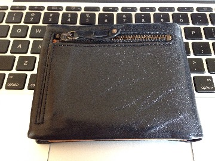
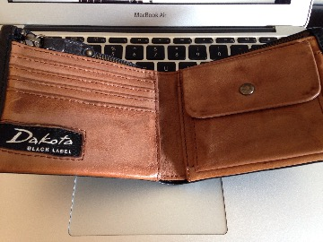
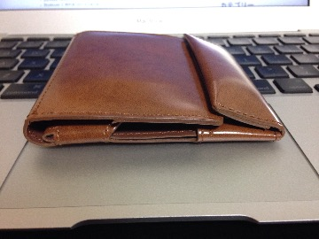
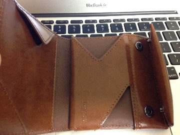
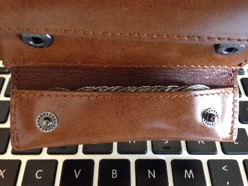
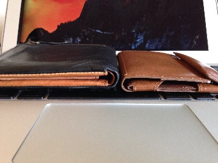

財布¶
TAKEO KIKUCHIの財布¶
| 使用期間 | 2009/04/xx-2012/05/xx |
|---|---|
| 公式サイト | タケオキクチ 財布 | TAKEO KIKUCHI 公式通販 |
| 購入サイト | 忘れた |
- 2つ折りの財布だった
Dakotaの財布¶
| 使用期間 | 2012/05/xx-2015/06/20 |
|---|---|
| 公式サイト | Dakota 公式Web Site |
| 購入サイト | 忘れた |
- これも2つ折り
- これと無印でかったキーケース(小銭入れ)を併用して使ってたんだけど、かさばるわ腰痛いわで引退
- もの自体は悪くないんだけどー

何も入っていない状態

カードも小銭もたくさん入る…がその分分厚く
abrAsus 薄い財布¶
| 使用期間 | 2015/06/20- |
|---|---|
| 公式サイト | SuperClassic |
| 購入サイト | 新宿高島屋 |
- 財布をケツポッケしてると腰痛がひどくなってきて、ダメ元で「腰痛対策 薄い財布」とかでググって見つけた
- 製品名がググって下さいと言わんばかりの直球さ

横から見た図、薄い

中身

小銭が入っているところ
- カードは5枚くらいしか入らないし、2枚とかだとすっぽぬけそう
- 身分証明系(免許証、保険証)、交通系(Suica、PASMO)、プラス1, 2枚？
- 小銭は探しやすい…が、レジでお釣りもらった時にしまうのが致命的にめんどい
普通の2つ折り財布との比較¶

両方とも空の状態